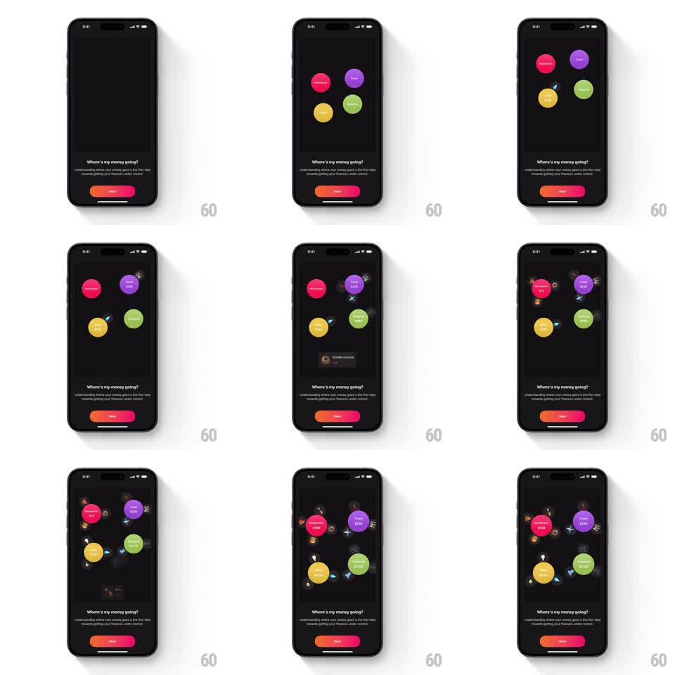

Media
Frame-by-frame

Rebuild this animation 1:1: Finma's sorting onboarding loop - on the dark "Where's my money going?" page, transaction cards slide up and fly into the floating category bubbles, which expand, roll their counters up, and release tiny merchant icons that orbit them.

Rebuild this animation 1:1: Finma's sorting onboarding loop - on the dark "Where's my money going?" page, transaction cards slide up and fly into the floating category bubbles, which expand, roll their counters up, and release tiny merchant icons that orbit them. ## Integration Integration: stack-agnostic spec - springs given as stiffness/damping, timed motions as duration + curve; map every value to your framework and animation library of choice. ## Scene Dark onboarding page: "Where's my money going?" title, "Understanding where your money goes is the first step towards getting your finances under control" subcopy, pager, orange-red gradient Next pill. The stage: four colored category bubbles floating (pink Restaurants, purple Travel, yellow Shopping, green Groceries), each showing a rolling dollar total (e.g. $168, $336) and ringed by tiny merchant icons. ## Motion spec Pattern: fly-to-bubble absorption with counter roll and orbit release. - Idle: bubbles drift slowly (translateY +-5pt, 3-4s loops, phase-offset). - A transaction card slides up from below center (translateY 40pt -> 0, 300ms), pauses (200ms), then launches toward its category bubble along a slight arc (450ms, ease-in), scaling down (1 -> 0.3) and fading on arrival. - On impact: the bubble expands (scale 1 -> 1.12 -> 1, spring ~340/14), its dollar counter rolls up to the new total (400ms), and a tiny merchant icon ejects from the bubble's edge and joins the orbit ring (spiral out 150ms, then circular orbit ~8s/rev). - Cycles target different bubbles in sequence (one card every ~900ms), so all four bubbles grow and accumulate orbiters. - The loop is continuous; the card spawn overlaps the previous flight's tail. ## Calibration - Each card's flight lands on the correct colored bubble - the sorting must read as categorization. - Orbiting icons are small (10-14pt) and dimmed compared to the bubbles. ## Reduced motion Cards fade into bubbles in place; counters change without flight or orbit. ## Don't miss - The counter roll happens exactly on card impact - before it, the bubble only anticipates. - The Next pill and pager stay static through the loop.